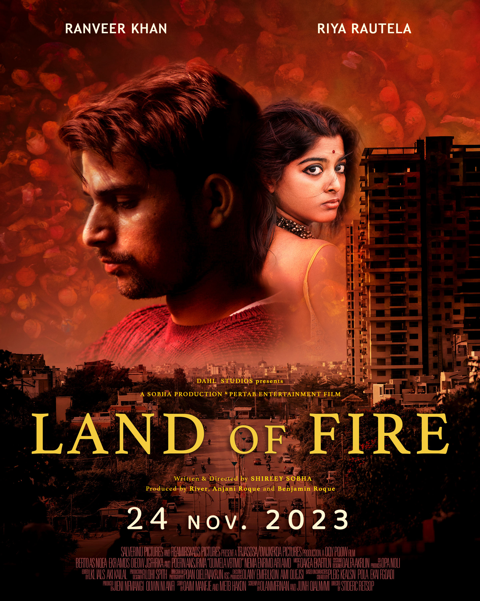
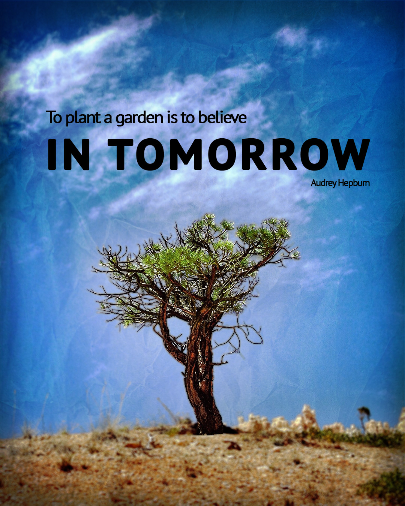
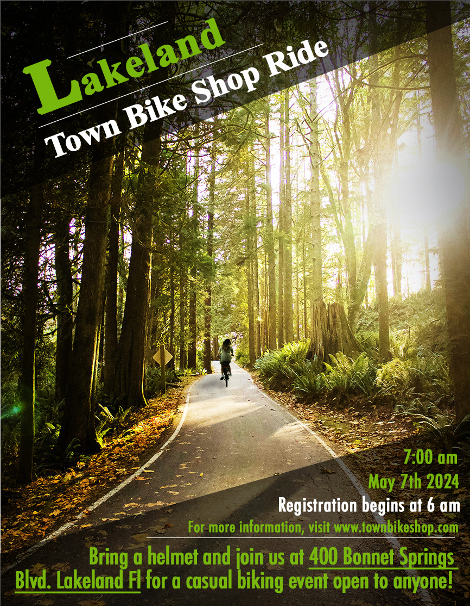
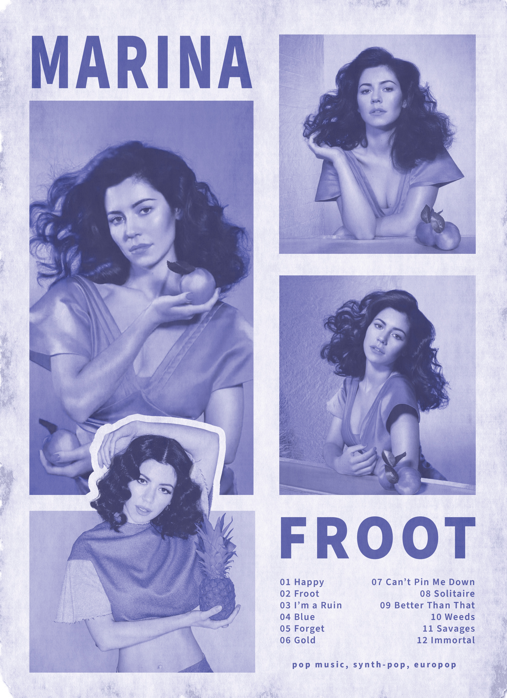
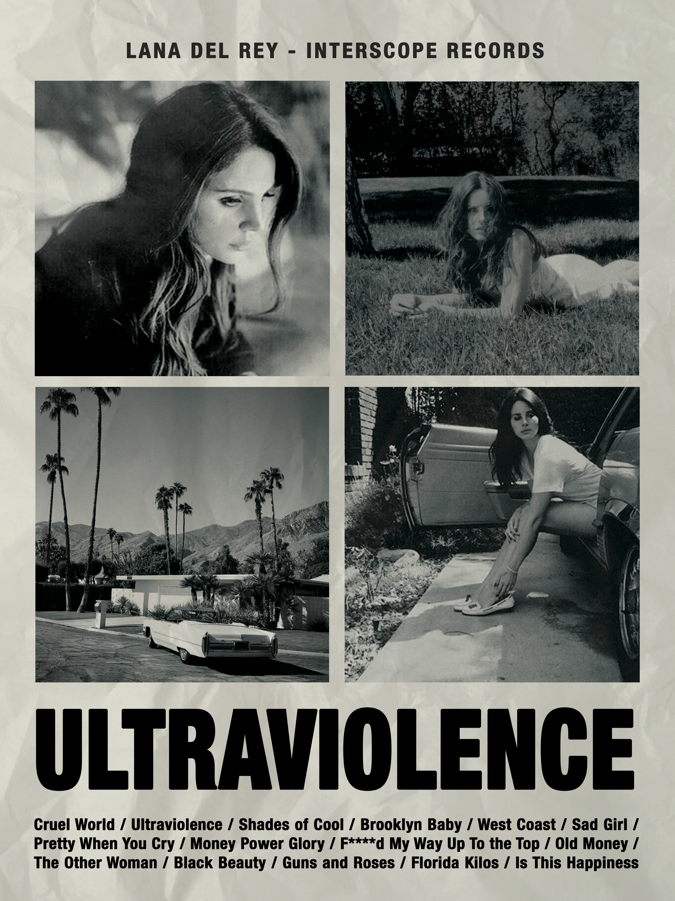

Movie Poster
A mock movie poster created for a project in Intro to Digital Media (2023). To create this project I used photostop and stock images found on Pixabay and Pexels to create a composite using various techniques. Some include gradiant, masking, and blend modes.
Inspirational Quote Social Media Post
This project was created for Image editing with Photoshop (2024). Tasked with creating a social media post that included an inspirational quote. By combining photo editing techniques used in class like adjustment layers for nondestructive editing with other techniques I created this post.
Flyer Design
This is a flyer made for a fictional bike event using photoshop and stock images. It was an assignment for Image Editing with Photshop (2024). By using techniques like masking, dodge and burn, and adjustment layers to edit nondestructively, I was able to create this composition.
Poster for Marina and The Diamonds, FROOT
This project was a practice design I created through inspiration from the album, "FROOT" by Marina and The Diamonds. Using photoshop to achieve this layout I used techniques like adjustment layers, masking, and layer effects to create this.
Poster for Lana Del Rey, Ultraviolence
Another practice piece inspired by Lana Del Rey's album Ultraviolence. Photoshop was used for this one as well, using techniques like clipping masks, adjustment layers and blend modes I created this composition.
Coffee Shop Logo
Design
In Digital Imaging Fundamentals, we were tasked with designing a logo (2023). For this logo we used Adobe Illustrator and designed mine for a fictional coffee house. Practice with line weight and color harmony was very important in trying to make this logo as responsive as I could.
You can also find or contact me at one of these!
- My Instagram
- 863-123-4576
- benroq10@gmail.com